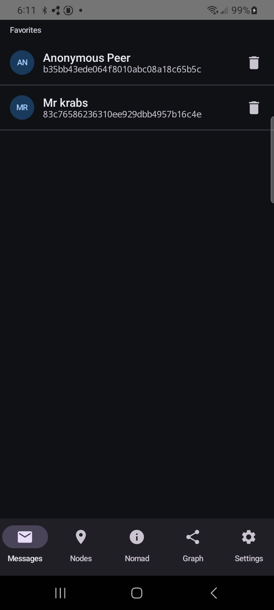
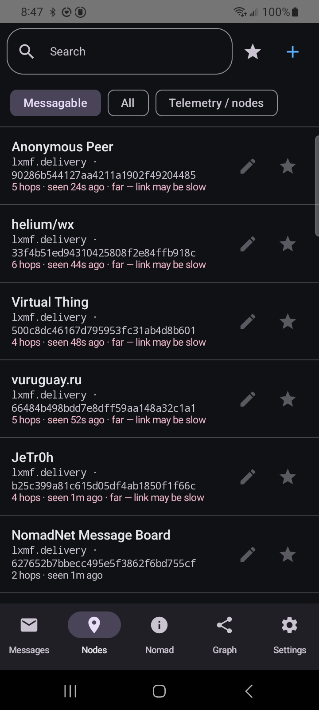
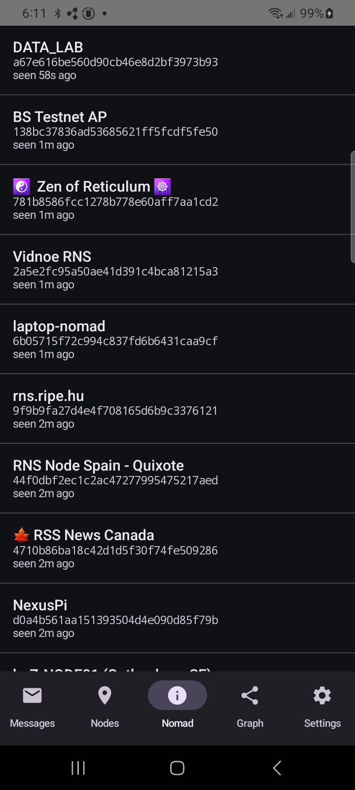
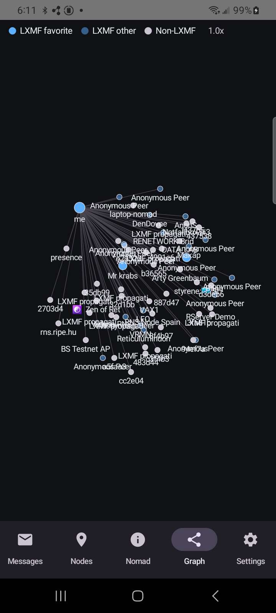
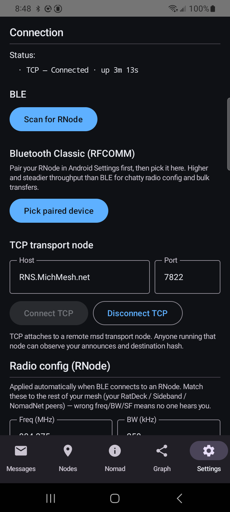

Off-grid encrypted messaging for Android & iOS — over LoRa radio or the open internet.
A free, open-source native client for the Reticulum mesh network. No servers, no accounts, no phone number, no tracking, no Google services, no app-store lock-in. Your identity is generated on-device; all cryptography runs locally.





Everything the Reticulum stack offers, in a real native mobile app.
End-to-end encrypted messages between identities — text, image attachments, file attachments, emoji reactions and replies. Delivered over a Reticulum Link with per-packet proofs, or store-and-forward via a propagation node.
Attach an RNode over Bluetooth or USB and message peers entirely over LoRa radio — no cell signal, no Wi-Fi, no infrastructure. Or attach to a Reticulum transport node over TCP when you do have a connection.
Browse NomadNet pages with full micron rendering — headings, tables, colours, forms, server-side includes — and follow links across the mesh.
Opt-in IRC-style group chat: join rooms on a relay-chat hub straight from the app.
A foreground service keeps the radio link alive and fires a notification the moment a message arrives, even with the app closed.
Keys are generated on-device and key-wrapped at rest. Export a passphrase-encrypted backup, move to a new phone, or share your contact card as a QR code.
Free. Sideloaded — never needed an app store, by design.
Download the signed APK from the latest release and install it.
For automatic updates, add the repo to Obtainium — it pulls new APKs straight from GitHub. Source URL:
github.com/thatSFguy/reticulum-mobile-app
An unsigned .ipa ships on every release. Re-sign it locally with a free
Apple ID using AltStore, Sideloadly, or SideStore —
no paid Developer Program needed.
In AltStore or SideStore, add this source URL to install and get update notifications automatically:
https://thatsfguy.github.io/reticulum-mobile-app/altstore.json
Or grab the
latest .ipa directly →
Not a policy — an architecture.
No account, e-mail, or phone number. The app has no backend — there is no company server to leak, subpoena, or shut down.
X25519 + AES-256 + HMAC, encrypt-then-MAC. Transport operators and radio eavesdroppers see ciphertext, never content.
AGPL-3.0. Reproducible Android builds — two builds of the same tag are byte-identical. The security audit is public in the repo.